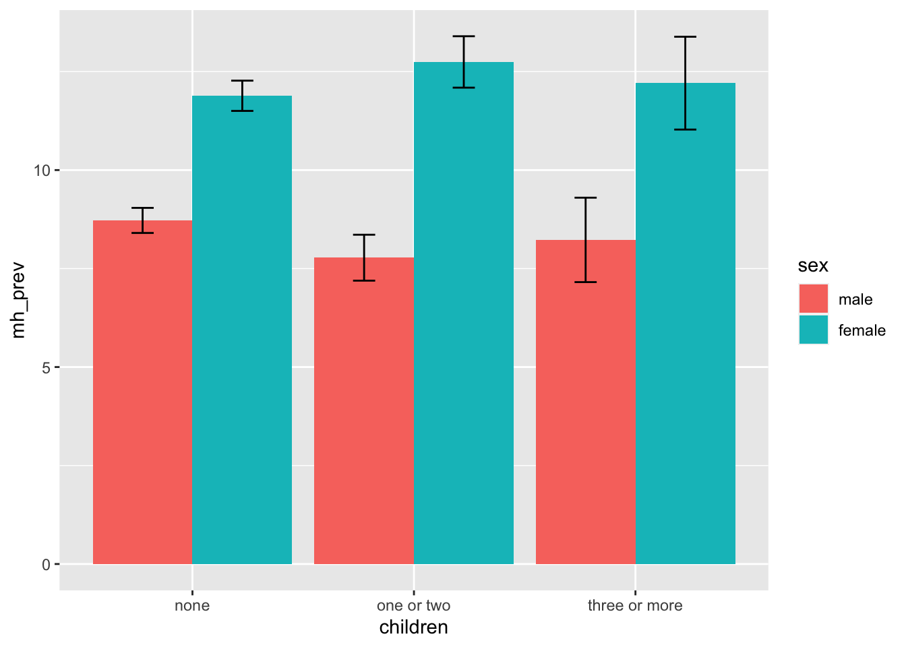
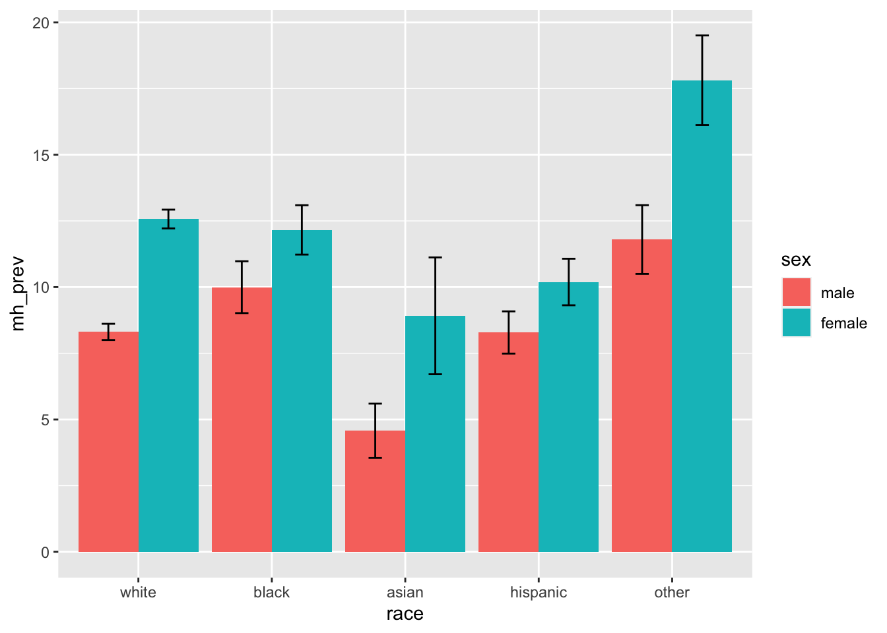
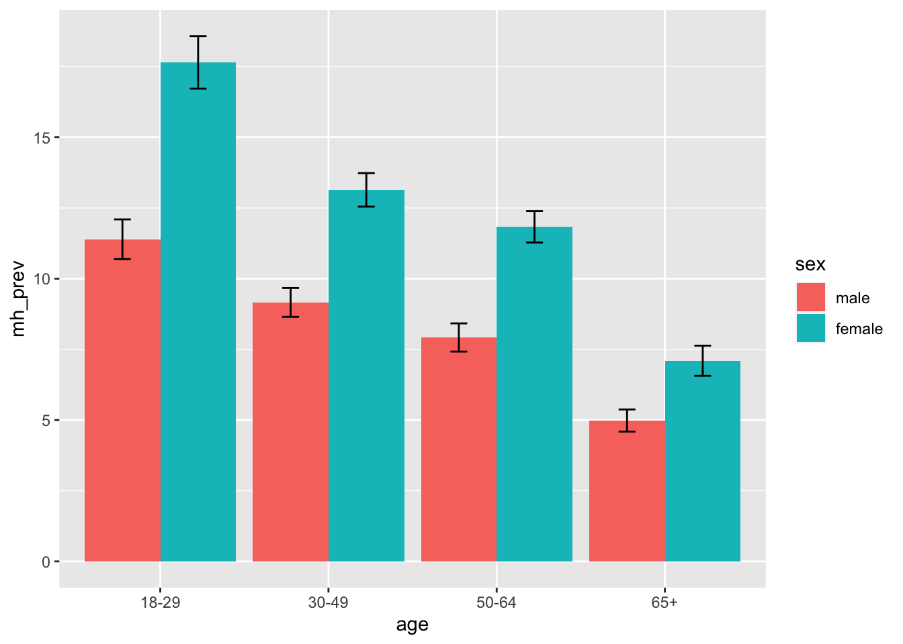

Below is the unweighted counts of the all included demographic variables, exposure, and other covariates, grouped by the self-reported number of days with bad mental health in the past 30 days in the following two categories: fewer than 15 days, and more than 15 days.
tb1_unweighted =
brfss_design$variables %>%
tbl_summary(by = mh_cat3, percent = "row",
include = c(sex, race, age, marital_status,
children,
education, income, employment,
general_health, exercise),
type = list(exercise ~ "categorical"))
tb1_unweighted| Characteristic | none, N = 262,2051 | <=15 days, N = 117,6761 | >15 days, N = 37,7381 |
|---|---|---|---|
| sex | |||
| male | 134,214 (69%) | 45,789 (24%) | 14,284 (7.4%) |
| female | 127,991 (57%) | 71,887 (32%) | 23,454 (11%) |
| race | |||
| white | 197,726 (63%) | 88,771 (28%) | 27,179 (8.7%) |
| black | 19,173 (62%) | 8,564 (28%) | 3,020 (9.8%) |
| asian | 6,947 (66%) | 2,940 (28%) | 583 (5.6%) |
| hispanic | 20,525 (62%) | 9,194 (28%) | 3,258 (9.9%) |
| other | 11,809 (57%) | 6,236 (30%) | 2,688 (13%) |
| Unknown | 6,025 | 1,971 | 1,010 |
| age | |||
| 18-29 | 18,280 (41%) | 20,316 (45%) | 6,451 (14%) |
| 30-49 | 56,950 (53%) | 38,463 (36%) | 12,008 (11%) |
| 50-64 | 70,980 (64%) | 29,741 (27%) | 10,745 (9.6%) |
| 65+ | 110,445 (76%) | 27,632 (19%) | 8,092 (5.5%) |
| Unknown | 5,550 | 1,524 | 442 |
| marital_status | |||
| married | 149,228 (68%) | 56,494 (26%) | 13,581 (6.2%) |
| not married | 110,858 (57%) | 60,375 (31%) | 23,841 (12%) |
| Unknown | 2,119 | 807 | 316 |
| children | |||
| none | 196,946 (65%) | 79,342 (26%) | 26,215 (8.7%) |
| one or two | 45,355 (56%) | 28,006 (34%) | 8,256 (10%) |
| three or more | 14,032 (57%) | 8,117 (33%) | 2,494 (10%) |
| Unknown | 5,872 | 2,211 | 773 |
| education | |||
| less than high school | 15,498 (65%) | 4,980 (21%) | 3,303 (14%) |
| high school or some college | 138,259 (63%) | 58,862 (27%) | 23,450 (11%) |
| bachelors or higher | 107,515 (63%) | 53,613 (31%) | 10,884 (6.3%) |
| Unknown | 933 | 221 | 101 |
| income | |||
| <=35000 | 53,927 (56%) | 27,156 (28%) | 14,742 (15%) |
| 35000-75000 | 65,381 (63%) | 30,402 (29%) | 8,559 (8.2%) |
| >75000 | 72,200 (64%) | 34,462 (30%) | 6,382 (5.6%) |
| Unknown | 70,697 | 25,656 | 8,055 |
| employment | |||
| employed | 130,474 (61%) | 67,937 (32%) | 16,564 (7.7%) |
| homemaker/student/retired | 108,219 (71%) | 34,274 (23%) | 9,739 (6.4%) |
| unemployed | 19,040 (43%) | 13,941 (32%) | 10,812 (25%) |
| Unknown | 4,472 | 1,524 | 623 |
| general_health | |||
| excellent | 55,267 (74%) | 16,371 (22%) | 2,761 (3.7%) |
| very good/good | 174,933 (64%) | 80,807 (29%) | 19,039 (6.9%) |
| fair/poor | 31,447 (47%) | 20,344 (30%) | 15,797 (23%) |
| Unknown | 558 | 154 | 141 |
| exercise | |||
| yes | 200,547 (63%) | 92,705 (29%) | 23,476 (7.4%) |
| no | 61,205 (61%) | 24,829 (25%) | 14,172 (14%) |
| Unknown | 453 | 142 | 90 |
| 1 n (%) | |||
We make the following observations about the above summary counts:
tb1_weighted =
brfss_design %>%
tbl_svysummary(by = mh_cat3, percent = "row",
include = c(sex, race, age, marital_status,
children,
education, income, employment,
general_health, exercise),
type = list(exercise ~ "categorical"))
tb1_weighted| Characteristic | none, N = 139,020,0321 | <=15 days, N = 71,383,8601 | >15 days, N = 24,239,5541 |
|---|---|---|---|
| sex | |||
| male | 74,996,157 (66%) | 29,780,780 (26%) | 9,668,097 (8.4%) |
| female | 64,023,876 (53%) | 41,603,080 (35%) | 14,571,457 (12%) |
| race | |||
| white | 83,410,417 (58%) | 45,193,702 (31%) | 15,084,759 (10%) |
| black | 16,045,070 (59%) | 8,157,283 (30%) | 3,042,394 (11%) |
| asian | 8,442,482 (61%) | 4,379,095 (32%) | 931,148 (6.8%) |
| hispanic | 24,168,303 (64%) | 10,265,562 (27%) | 3,507,143 (9.2%) |
| other | 3,894,890 (53%) | 2,327,310 (32%) | 1,079,685 (15%) |
| Unknown | 3,058,871 | 1,060,908 | 594,425 |
| age | |||
| 18-29 | 19,275,545 (42%) | 20,146,546 (44%) | 6,630,533 (14%) |
| 30-49 | 41,831,837 (55%) | 26,234,580 (34%) | 8,562,344 (11%) |
| 50-64 | 36,819,919 (64%) | 14,781,017 (26%) | 5,687,827 (9.9%) |
| 65+ | 38,214,855 (75%) | 9,475,192 (19%) | 3,122,851 (6.1%) |
| Unknown | 2,877,876 | 746,525 | 235,999 |
| marital_status | |||
| married | 78,145,990 (66%) | 31,953,501 (27%) | 8,485,758 (7.2%) |
| not married | 59,644,952 (52%) | 38,905,822 (34%) | 15,509,547 (14%) |
| Unknown | 1,229,090 | 524,538 | 244,250 |
| children | |||
| none | 91,064,259 (60%) | 44,076,901 (29%) | 15,501,062 (10%) |
| one or two | 33,342,519 (56%) | 20,001,927 (34%) | 6,233,678 (10%) |
| three or more | 10,826,346 (58%) | 5,869,934 (31%) | 1,954,893 (10%) |
| Unknown | 3,786,908 | 1,435,098 | 549,920 |
| education | |||
| less than high school | 17,736,208 (65%) | 5,876,281 (22%) | 3,596,440 (13%) |
| high school or some college | 78,639,436 (58%) | 41,066,022 (30%) | 15,833,615 (12%) |
| bachelors or higher | 42,076,585 (59%) | 24,323,497 (34%) | 4,741,446 (6.7%) |
| Unknown | 567,804 | 118,060 | 68,053 |
| income | |||
| <=35000 | 30,354,778 (54%) | 16,410,860 (29%) | 8,977,868 (16%) |
| 35000-75000 | 31,594,079 (59%) | 16,838,980 (31%) | 5,227,369 (9.7%) |
| >75000 | 37,356,516 (60%) | 20,936,136 (33%) | 4,478,280 (7.1%) |
| Unknown | 39,714,659 | 17,197,883 | 5,556,037 |
| employment | |||
| employed | 78,552,047 (59%) | 43,091,586 (32%) | 11,604,835 (8.7%) |
| homemaker/student/retired | 44,635,025 (66%) | 18,039,204 (27%) | 5,361,147 (7.9%) |
| unemployed | 12,903,776 (45%) | 9,216,061 (32%) | 6,841,427 (24%) |
| Unknown | 2,929,184 | 1,037,010 | 432,144 |
| general_health | |||
| excellent | 32,360,766 (71%) | 10,946,939 (24%) | 2,014,858 (4.4%) |
| very good/good | 89,961,426 (59%) | 49,094,323 (32%) | 12,683,162 (8.4%) |
| fair/poor | 16,407,870 (44%) | 11,261,464 (30%) | 9,470,573 (25%) |
| Unknown | 289,971 | 81,134 | 70,961 |
| exercise | |||
| yes | 106,384,349 (59%) | 57,064,736 (32%) | 15,868,887 (8.8%) |
| no | 32,455,082 (59%) | 14,252,545 (26%) | 8,307,124 (15%) |
| Unknown | 180,601 | 66,579 | 63,543 |
| 1 n (%) | |||
We are interested in the differential impact of the number of children in the household on self-reported over 15 days of bad mental health in the past 30 days among men and women. Below is a barplot on this topic:
brfss_design %>%
group_by(sex, children, mh_bin) %>%
summarize(mh_prev = 100*survey_mean(na.rm = T, vartype = c("ci"))) %>%
filter(!is.na(children), mh_bin == ">15 days") %>%
select(-mh_bin) %>%
ggplot(aes(x = children, y = mh_prev, fill = sex)) +
geom_bar(position="dodge", stat="identity") +
geom_errorbar(aes(ymin= mh_prev_low, ymax= mh_prev_upp),
width=.2, position=position_dodge(.9))
One interesting observation is that same as depression, men who have children in the household have significantly lower prevalence of self-reported over 15 days of bad mental health while women who have children don’t. We do a chi-square test incorporating the survey weights to verify this observation:
# For women
brfss_design %>%
filter(sex == "female") %>%
select(children, mh_bin) %>%
svychisq(~children + mh_bin, . , statistic="adjWald") %>%
broom::tidy()## Multiple parameters; naming those columns ndf, ddf## # A tibble: 1 × 5
## ndf ddf statistic p.value method
## <dbl> <dbl> <dbl> <dbl> <chr>
## 1 2 221250 2.48 0.0834 Design-based Wald test of association# For men
brfss_design %>%
filter(sex == "male") %>%
select(children, mh_bin) %>%
svychisq(~children + mh_bin, . , statistic="adjWald") %>%
broom::tidy()## Multiple parameters; naming those columns ndf, ddf## # A tibble: 1 × 5
## ndf ddf statistic p.value method
## <dbl> <dbl> <dbl> <dbl> <chr>
## 1 2 192242 3.98 0.0187 Design-based Wald test of associationAs expected, based on the chi-squared test, the number of children in the household is significantly associated with self-reported over 15 days of bad mental health in the past 30 days among men but not women.
Next, we examine how gender and race together associate with self-reported over 15 days of bad mental health in the past 30 days.
brfss_design %>%
group_by(sex, race, mh_bin) %>%
summarize(mh_prev = 100*survey_mean(na.rm = T, vartype = c("ci"))) %>%
filter(!is.na(race), mh_bin == ">15 days") %>%
select(-mh_bin) %>%
ggplot(aes(x = race, y = mh_prev, fill = sex)) +
geom_bar(position="dodge", stat="identity") +
geom_errorbar(aes(ymin=mh_prev_low, ymax=mh_prev_upp),
width=.2, position=position_dodge(.9))
We can see that not only is the reported number of days in the past 30 days being in bad mental health is larger in women than men, the same holds true for all race/ethnicities included in the data set.
brfss_design %>%
group_by(sex, age, mh_bin) %>%
summarize(mh_prev = 100*survey_mean(na.rm = T, vartype = c("ci"))) %>%
filter(!is.na(age), mh_bin == ">15 days") %>%
select(-mh_bin) %>%
ggplot(aes(x = age, y = mh_prev, fill = sex)) +
geom_bar(position="dodge", stat="identity") +
geom_errorbar(aes(ymin=mh_prev_low, ymax=mh_prev_upp),
width=.2, position=position_dodge(.9))
Based on the plot above, it seems that, for women, the prevalence of self-reported over 15 days of bad mental in past 30 days drops slightly between age group 30-49 and 50-64, but decreases significantly between age group 18-29 and 30-49 as well as between age group 50-64 and 65+. The same trend is displayed among men as well but in smaller magnitude.
This gap in the magnitude of change in prevalence of self-reported number of days in bad mental in the past 30 days indicates that aging might affect self-reported it among women and men differently.
As a conclusion, all factors we chose influence self-reported number of days in bad mental in the past 30 days in the similar way to depression. We presume that it is because longer periods of being in bad mental health will lead to depression. Correspondingly, those in depression are much more likely to be in bad mental health for longer period.